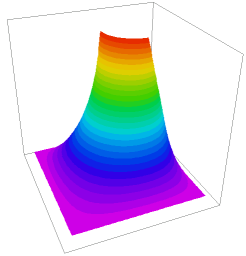

|
minimal_surface |

  
|
|
minimal_surface |
|
{ MINIMUM_SURFACE.PDE
This example shows the application of FlexPDE to the non-linear problem
of surface tension or "minimal surface".
The surface area of an infinitesimal rectangular patch of an arbitrary
surface
U = U(x,y)
is (by the Pythagorean theorem)
dA = dx*dy*sqrt[1 + (dU/dx)^2 + (dU/dy)^2],
where dx and dy are the projections of the patch in the X-Y plane.
The total surface area of a function U(x,y) over a domain is then
A = integral(dx*dy*sqrt[1 + dx(U)^2 + dy(U)^2])
For the function U to have minimal surface area, it must satisfy the
Euler equation
dx(dF/dUx) + dy(dF/dUy) - dF/dU = 0
where
F = sqrt[1 + (dU/dx)^2 + (dU/dy)^2]
dF/dUx = (dU/dx)/F
dF/dUy = (dU/dy)/F
dF/dU = 0
The equation for the minimizing surface is therefore (in FlexPDE notation):
dx((1/F)*dx(U)) + dy((1/F)*dy(U)) = 0
This is analogous to a heatflow problem
div(K*grad(T)) = 0
where the conductivity has the value
K = 1/F
This is a highly nonlinear problem, in that the conductivity, K, becomes
small in regions of high gradient, which tends to increase the gradient
even more.
In the present example, we stretch a soap-bubble across a square bent wire frame, in which the first quadrant of the boundary has been bent inward and raised up. } title "MINIMAL SURFACE"
variables u
definitions size = 6 a pressure = 0 r = sqrt(x^2+y^2)
equations u : div(a*grad(u)) + pressure = 0
boundaries region 1 a = 1/sqrt(1+grad(u)^2) start(-size,-size) |
 |
value(u)=0 line to (size ,-size) to (size,0)
value(u) = size-r line to (size/2,0)
value(u) = size/2 arc(center=size/2,size/2) angle -90
value(u) = size-r line to (0,size)
value(u) = 0 line to (-size,size)
to close
monitors
contour(u)
plots
grid(x,y)
contour(u)
surface(u)
end